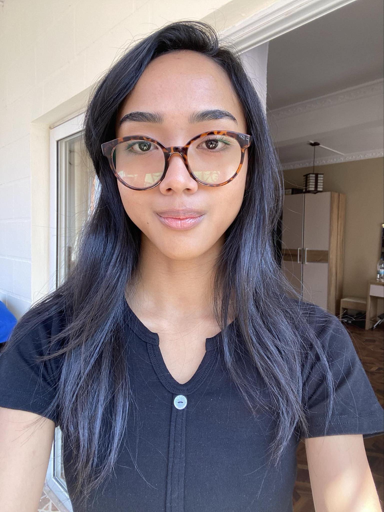
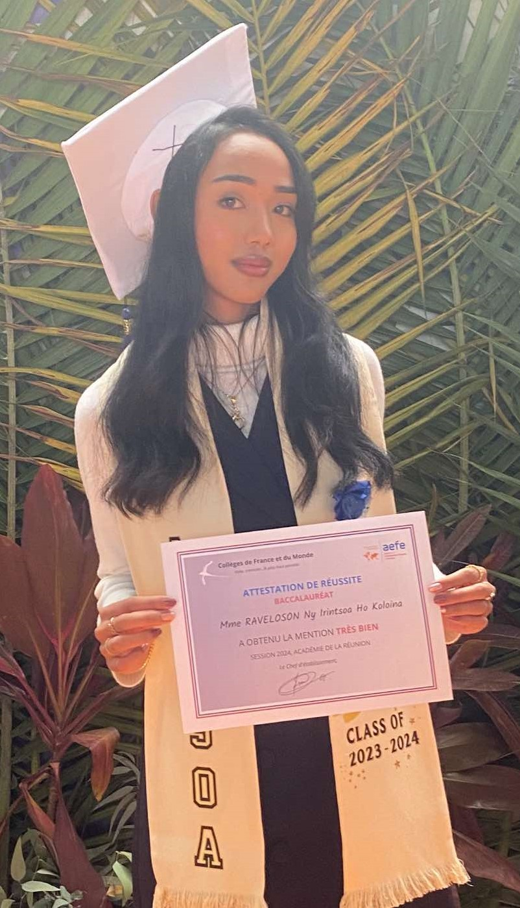
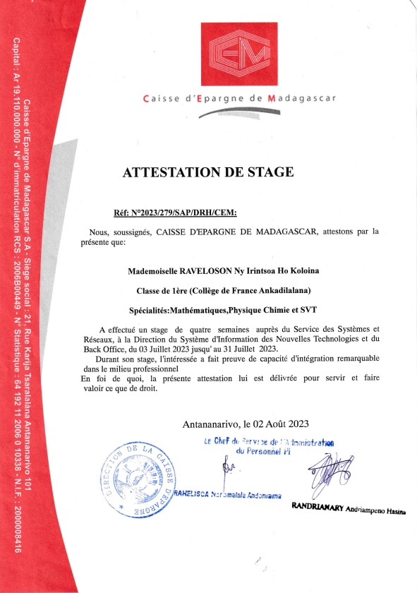
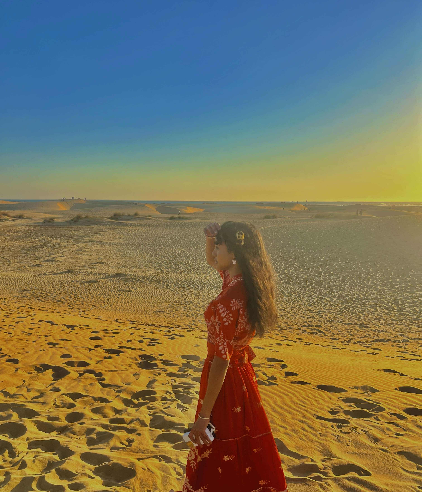
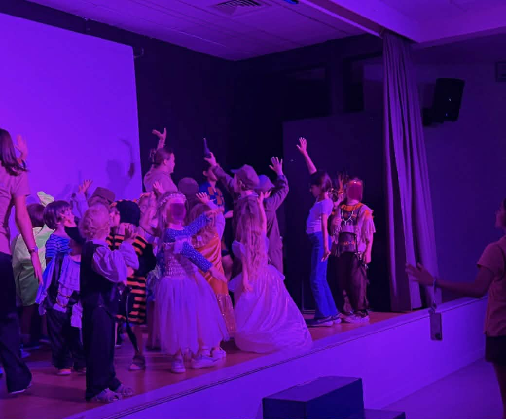

🌸 Qui suis-je ?
Je m’appelle Ho Koloina, étudiante en BUT Réseaux et Télécommunications à l’IUT de Grand Ouest Normandie. Originaire de Madagascar, j’ai grandi à Antananarivo avant de venir en France en septembre 2024 pour poursuivre mes études.
🎓 Mon parcours académique
J’ai obtenu en 2024 mon baccalauréat général avec les spécialités Mathématiques et Physique-Chimie, ainsi qu’une option Maths expertes, et une mention Très Bien. Cette formation m’a appris la rigueur et la logique essentielles à mon domaine.
Par la suite, j'ai choisi la voie du BUT R&T pour son approche professionnalisante.
Aujourd'hui en deuxième année, je me spécialise dans la cybersécurité, apprenant à sécuriser des infrastructures et à en auditer les vulnérabilités .

💼 Mon immersion dans le monde professionnel
Lors des vacances de 2023, j’ai effectué un stage à la Caisse d’Épargne de Madagascar, au sein du service Système et Réseaux. Cette expérience m’a permis de découvrir les réalités du métier : gestion des pannes réseau, accompagnement des utilisateurs et administration des systèmes.

🚀 Mes aspirations professionnelles
Après mon BUT, mon objectif est d’intégrer une école d’ingénieurs afin de devenir ingénieure en cybersécurité, un domaine essentiel et encore peu investi par les femmes.
🌿 Passions et Engagements
Au-delà de la tech, je suis une passionnée de voyage et de photographie. Découvrir de nouvelles cultures nourrit mon ouverture d'esprit.
Sur le plan associatif, j'ai été ambassadrice du développement durable à l’université l'année dernière (2024-2025). Une expérience qui m'a appris à sensibiliser et convaincre.
De plus, mes expériences récentes d'animatrice pendant l'été 2025 auprès des jeunes renforcent mon sens des responsabilités, ma capacité à encadrer des groupes et mon dynamisme.

